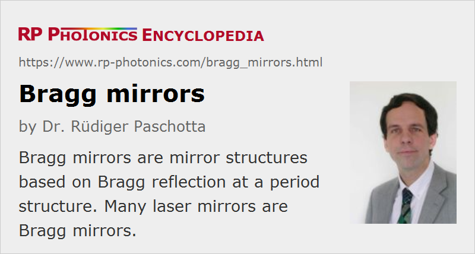

Bragg Mirrors
Acronym: DBR = distributed Bragg reflector
Definition: mirror structures based on Bragg reflection at a period structure
More general term: distributed mirrors
German: Bragg-Spiegel
How to cite the article; suggest additional literature
Author: Dr. Rüdiger Paschotta
A Bragg mirror (also called distributed Bragg reflector) is a mirror structure which consists of an alternating sequence of layers of two different optical materials. The most frequently used design is that of a quarter-wave mirror, where each optical layer thickness corresponding to one quarter of the wavelength for which the mirror is designed. The latter condition holds for normal incidence; if the mirror is designed for larger angles of incidence, accordingly thicker layers are needed.
The principle of operation can be understood as follows. Each interface between the two materials contributes a Fresnel reflection. For the design wavelength, the optical path length difference between reflections from subsequent interfaces is half the wavelength; in addition, the amplitude reflection coefficients for the interfaces have alternating signs. Therefore, all reflected components from the interfaces interfere constructively, which results in a strong reflection. The reflectance (reflectivity) achieved is determined by the number of layer pairs and by the refractive index contrast between the layer materials. The reflection bandwidth is determined mainly by the index contrast.
Figure 1 shows the field penetration into a Bragg mirror made of eight layer pairs of TiO2 and SiO2. The blue curve shows the intensity distribution of a wave with the design wavelength of 1000 nm, incident from the right-hand side. Note that the intensity is oscillating outside the mirror due to the interference of the counterpropagating waves. The gray curve shows the intensity distribution for 800 nm, where a significant part of the light can get through the mirror coating.

Figure 2 shows the reflectance and the group delay dispersion as functions of the wavelength. The reflectance is high over some optical bandwidth, which depends on the refractive index contrast of the materials used and on the number of layer pairs. The dispersion is calculated from the second derivative of the reflection phase with respect to the optical frequency. It is small near the center of the reflection band, but grows rapidly near the edges.

Figure 3 shows with a color scale how the optical field penetrates into the mirror. It can be seen that there is little field penetration well within the reflection band.
Figure 4 shows reflectance spectra of a Bragg mirror for different angles of incidence. The larger that angle, the more the reflection spectrum is shifted towards shorter wavelengths.
Types of Bragg Mirrors
Bragg mirrors can be fabricated with different technologies:
- Dielectric mirrors based on thin-film coating technology, fabricated for example with electron beam evaporation or with ion beam sputtering, are used as laser mirrors in solid-state bulk lasers. The mirror structure then consists of amorphous materials.
- Fiber Bragg gratings, including long-period fiber gratings, are often used in fiber lasers and other fiber devices. They can be fabricated by irradiating a fiber with spatially patterned ultraviolet light. Similarly, volume Bragg gratings can be made in photosensitive bulk glass.
- Semiconductor Bragg mirrors can be produced with lithographic methods. They are used, for example, in surface-emitting semiconductor lasers and in semiconductor saturable absorber mirrors, but also as separate optical components (→ crystalline mirrors).
- There are various types of Bragg reflectors used in other waveguides, based on, e.g., corrugated waveguide structures which can be fabricated via lithography. Such kind of gratings are used in some distributed Bragg reflector or distributed feedback laser diodes.
There are other multilayer mirror designs which deviate from the simple quarter-wave design. They generally have a lower reflectance for the same number of layers, but can be optimized e.g. as dichroic mirrors or as dispersive chirped mirrors for dispersion compensation.
Questions and Comments from Users
Here you can submit questions and comments. As far as they get accepted by the author, they will appear above this paragraph together with the author’s answer. The author will decide on acceptance based on certain criteria. Essentially, the issue must be of sufficiently broad interest.
Please do not enter personal data here; we would otherwise delete it soon. (See also our privacy declaration.) If you wish to receive personal feedback or consultancy from the author, please contact him e.g. via e-mail.
By submitting the information, you give your consent to the potential publication of your inputs on our website according to our rules. (If you later retract your consent, we will delete those inputs.) As your inputs are first reviewed by the author, they may be published with some delay.
Bibliography
| [1] | Analysis of a Bragg mirror with the RP Coating software |
| [2] | R. Paschotta, case study on a Bragg mirror |
See also: mirrors, Bragg gratings, fiber Bragg gratings, dielectric mirrors, crystalline mirrors, chirped mirrors, dispersive mirrors, laser mirrors, distributed Bragg reflector lasers, distributed feedback lasers
and other articles in the category photonic devices
|  |
If you like this page, please share the link with your friends and colleagues, e.g. via social media:
These sharing buttons are implemented in a privacy-friendly way!